Tests for checking Batch Effects
| Batch 1 | Batch 2 | Batch 3 | |
|---|---|---|---|
| Condition 1 | 10 | 10 | 10 |
| Condition 2 | 10 | 10 | 10 |
| Standardized Pearson Correlation Coefficient | Cramer’s V | |
|---|---|---|
| Confounding Coefficients (0=no confounding, 1=complete confounding) | 0 | 0 |
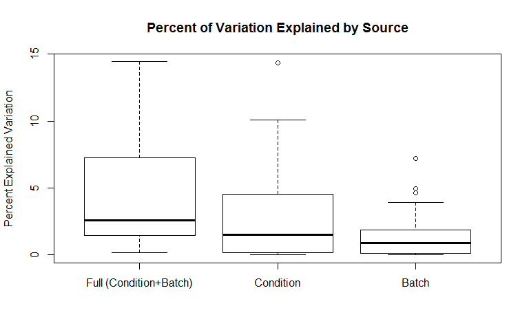
| Full (Condition+Batch) | Condition | Batch | |
|---|---|---|---|
| Min. | 0.16 | 0 | 0 |
| 1st Qu. | 1.483 | 0.1883 | 0.09725 |
| Median | 2.601 | 1.529 | 0.8865 |
| Mean | 4.147 | 2.837 | 1.31 |
| 3rd Qu. | 7.187 | 4.481 | 1.763 |
| Max. | 14.43 | 14.37 | 7.204 |
| Min. | 1st Qu. | Median | Mean | 3rd Qu. | Max. | Ps<0.05 | |
|---|---|---|---|---|---|---|---|
| Batch P-values | 0.1231 | 0.5987 | 0.7788 | 0.739 | 0.9722 | 1 | 0 |
| Condition P-values | 0.003326 | 0.1082 | 0.3543 | 0.4308 | 0.7458 | 0.9969 | 0.18 |
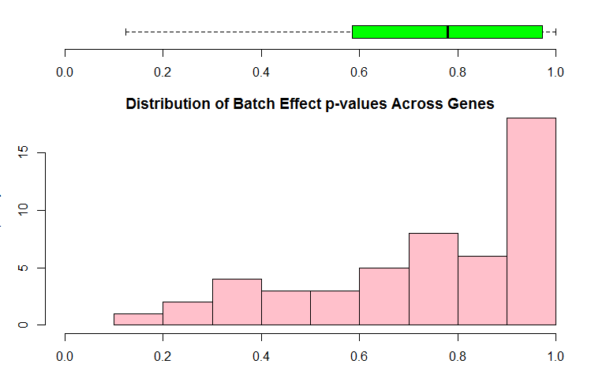
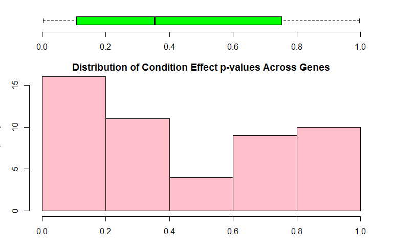
Boxplots for all values for each of the samples and are colored by batch membership.
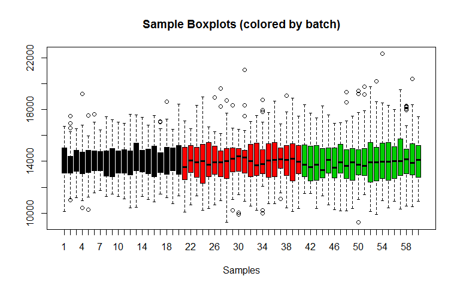
| Condition: 2 (logFC) | AveExpr | t | P.Value | adj.P.Val | B | |
|---|---|---|---|---|---|---|
| 45 | 1012 | 14915 | 2.633 | 0.008843 | 0.1753 | -4.595 |
| 5 | 963.5 | 13003 | 2.595 | 0.009845 | 0.1753 | -4.595 |
| 37 | 986.1 | 14910 | 2.501 | 0.01284 | 0.1753 | -4.595 |
| 47 | 949.4 | 15243 | 2.414 | 0.01626 | 0.1753 | -4.595 |
| 42 | 920 | 14863 | 2.379 | 0.01789 | 0.1753 | -4.595 |
| 30 | 874.7 | 14329 | 2.318 | 0.02104 | 0.1753 | -4.595 |
| 8 | 823.8 | 13215 | 2.181 | 0.0298 | 0.1945 | -4.595 |
| 34 | -822.4 | 14602 | -2.164 | 0.03113 | 0.1945 | -4.595 |
| 44 | -775.7 | 15228 | -1.975 | 0.04907 | 0.2479 | -4.595 |
| 22 | 758.8 | 14064 | 1.97 | 0.04959 | 0.2479 | -4.595 |
This plot helps identify outlying samples. 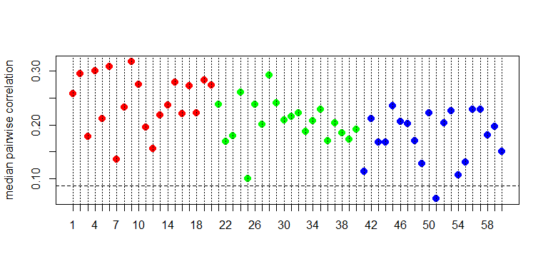
This is a heatmap of the given data matrix showing the batch effects and variations with different conditions. 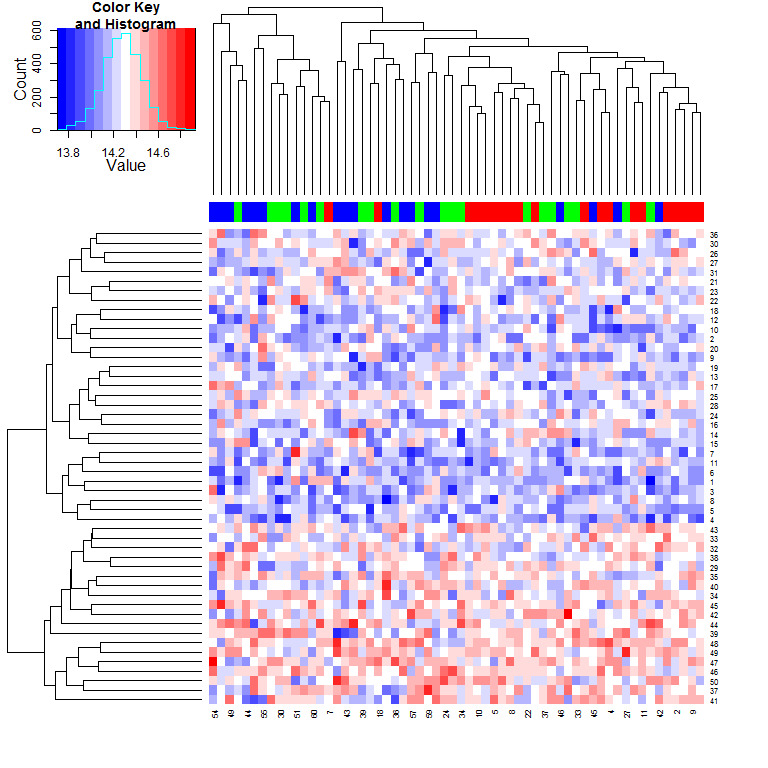
This is a heatmap of the correlation between samples. 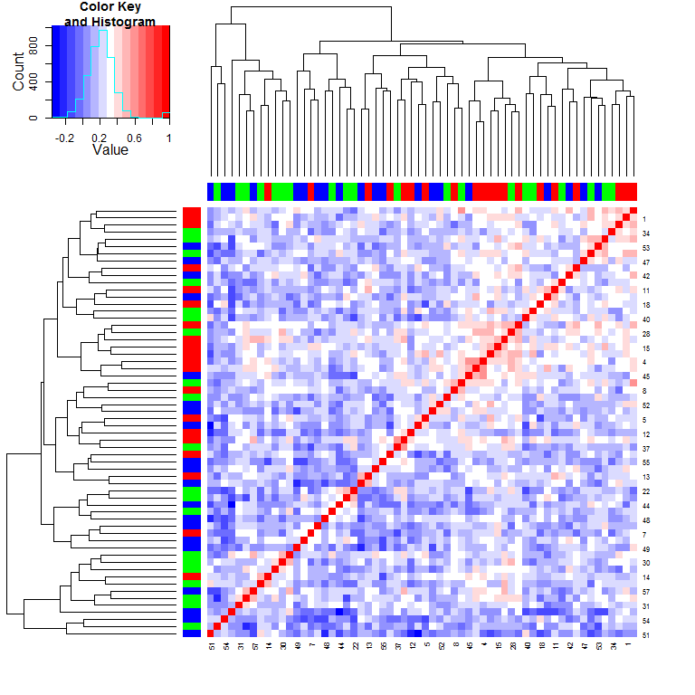
This is a Circular Dendrogram of the given data matrix colored by batch to show the batch effects. 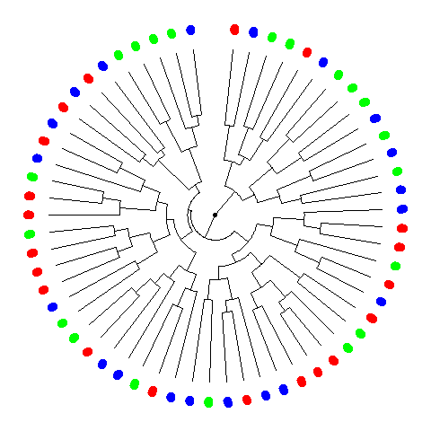
This is a plot of the top two principal components colored by batch to show the batch effects. 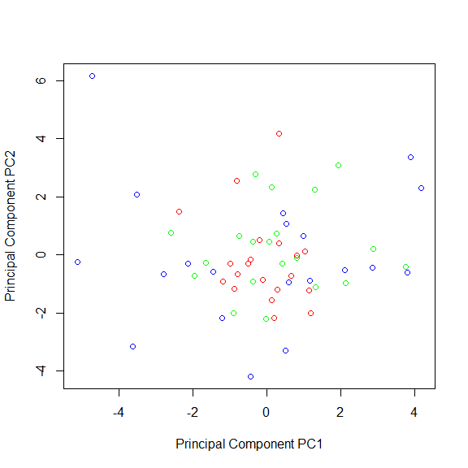
| Proportion of Variance (%) | Cumulative Proportion of Variance (%) | Percent Variation Explained by Either Condition or Batch | Percent Variation Explained by Condition | Condition Significance (p-value) | Percent Variation Explained by Batch | Batch Significance (p-value) | |
|---|---|---|---|---|---|---|---|
| PC1 | 7.459 | 7.459 | 8.6 | 7.3 | 0.03953 | 1.3 | 0.672 |
| PC2 | 6.663 | 14.12 | 14.1 | 13.1 | 0.00502 | 1 | 0.723 |
| PC3 | 6.083 | 20.21 | 2.4 | 0.5 | 0.6038 | 2 | 0.5719 |
| PC4 | 5.41 | 25.62 | 5.9 | 5.6 | 0.07436 | 0.4 | 0.8892 |
| PC5 | 5.013 | 30.63 | 0.5 | 0.5 | 0.6003 | 0 | 0.9917 |
| PC6 | 4.7 | 35.33 | 2.9 | 2.2 | 0.2629 | 0.6 | 0.8312 |
| PC7 | 4.381 | 39.71 | 1.6 | 1.1 | 0.4276 | 0.4 | 0.8845 |
| PC8 | 4.027 | 43.74 | 1.1 | 0.5 | 0.5807 | 0.6 | 0.8466 |
| PC9 | 3.904 | 47.64 | 3.4 | 2.8 | 0.2079 | 0.6 | 0.8422 |
| PC10 | 3.857 | 51.5 | 3.3 | 3.2 | 0.1757 | 0 | 0.9968 |
| PC11 | 3.627 | 55.13 | 2.1 | 0.2 | 0.7625 | 1.9 | 0.577 |
| PC12 | 3.471 | 58.6 | 2.6 | 2 | 0.2923 | 0.6 | 0.8419 |
| PC13 | 3.105 | 61.7 | 2.8 | 0 | 0.9831 | 2.8 | 0.4514 |
| PC14 | 2.894 | 64.6 | 6.8 | 4.8 | 0.0935 | 2 | 0.5532 |
| PC15 | 2.851 | 67.45 | 3.6 | 2 | 0.2875 | 1.7 | 0.6214 |
| PC16 | 2.73 | 70.18 | 3.8 | 2.1 | 0.2785 | 1.8 | 0.5988 |
| PC17 | 2.458 | 72.64 | 6.7 | 0.2 | 0.7211 | 6.5 | 0.151 |
| PC18 | 2.236 | 74.87 | 6.1 | 2.3 | 0.2426 | 3.7 | 0.337 |
| PC19 | 2.214 | 77.08 | 1.5 | 0.4 | 0.6278 | 1.1 | 0.728 |
| PC20 | 2.039 | 79.12 | 4.7 | 4.5 | 0.1109 | 0.2 | 0.9468 |
| PC21 | 1.933 | 81.06 | 0.9 | 0.3 | 0.6811 | 0.6 | 0.8459 |
| PC22 | 1.829 | 82.89 | 3.3 | 0.5 | 0.5915 | 2.8 | 0.4552 |
| PC23 | 1.624 | 84.51 | 1.3 | 0.8 | 0.4917 | 0.5 | 0.8792 |
| PC24 | 1.532 | 86.04 | 3.1 | 0.2 | 0.7521 | 2.9 | 0.4367 |
| PC25 | 1.423 | 87.46 | 2 | 1.2 | 0.4183 | 0.9 | 0.7772 |
| PC26 | 1.263 | 88.73 | 8 | 1.1 | 0.4154 | 6.9 | 0.1318 |
| PC27 | 1.232 | 89.96 | 1.1 | 0.2 | 0.7717 | 1 | 0.7547 |
| PC28 | 1.131 | 91.09 | 0.8 | 0.7 | 0.5242 | 0 | 0.9879 |
| PC29 | 1.077 | 92.17 | 0.8 | 0.7 | 0.546 | 0.2 | 0.9566 |
| PC30 | 1.022 | 93.19 | 6.5 | 5.2 | 0.08302 | 1.3 | 0.6891 |
| PC31 | 0.8768 | 94.07 | 1.8 | 0.8 | 0.4924 | 0.9 | 0.7691 |
| PC32 | 0.8314 | 94.9 | 1.6 | 1.3 | 0.4016 | 0.4 | 0.9013 |
| PC33 | 0.7149 | 95.61 | 0.4 | 0 | 0.969 | 0.4 | 0.892 |
| PC34 | 0.6649 | 96.28 | 1 | 0 | 0.9992 | 1 | 0.7467 |
| PC35 | 0.5439 | 96.82 | 1.9 | 0 | 0.944 | 1.9 | 0.5921 |
| PC36 | 0.4784 | 97.3 | 1.1 | 0.1 | 0.7926 | 1 | 0.7619 |
| PC37 | 0.4201 | 97.72 | 0.6 | 0.6 | 0.5633 | 0 | 0.9975 |
| PC38 | 0.4087 | 98.13 | 1.2 | 1.2 | 0.4214 | 0 | 0.9946 |
| PC39 | 0.3851 | 98.51 | 1 | 0.9 | 0.4892 | 0.2 | 0.9478 |
| PC40 | 0.3284 | 98.84 | 2.2 | 0.8 | 0.5083 | 1.4 | 0.6752 |
| PC41 | 0.2965 | 99.14 | 0.1 | 0.1 | 0.8553 | 0 | 0.9916 |
| PC42 | 0.2216 | 99.36 | 2.4 | 2.4 | 0.2438 | 0 | 0.9947 |
| PC43 | 0.1483 | 99.51 | 0.1 | 0 | 0.8708 | 0 | 0.9937 |
| PC44 | 0.137 | 99.64 | 3.7 | 0 | 0.9696 | 3.6 | 0.3531 |
| PC45 | 0.1141 | 99.76 | 3.6 | 0.3 | 0.6644 | 3.3 | 0.3949 |
| PC46 | 0.09802 | 99.86 | 1.9 | 1.6 | 0.3439 | 0.3 | 0.9105 |
| PC47 | 0.06051 | 99.92 | 19.2 | 2.6 | 0.1827 | 16.6 | 0.00529 |
| PC48 | 0.05329 | 99.97 | 4.3 | 3.1 | 0.1803 | 1.1 | 0.7201 |
| PC49 | 0.03008 | 100 | 5 | 1 | 0.4384 | 4 | 0.3136 |
| PC50 | 2.16e-29 | 100 | 40.3 | 1.5 | 0.2342 | 38.8 | 0 |
This is a heatmap plot showing the variation of gene expression mean, variance, skewness and kurtosis between samples grouped by batch to see the batch effects variation 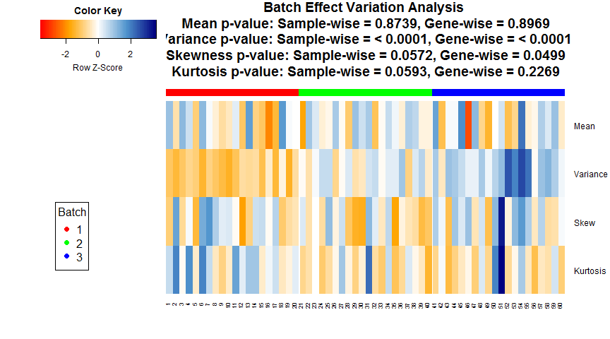
## Note: Sample-wise p-value is calculated for the variation across samples on the measure across genes. Gene-wise p-value is calculated for the variation of each gene between batches on the measure across each batch. If the data is quantum normalized, then the Sample-wise measure across genes is same for all samples and Gene-wise p-value is a good measure.This is a plot showing whether parametric or non-parameteric prior is appropriate for this data. It also shows the Kolmogorov-Smirnov test comparing the parametric and non-parameteric prior distribution.
## Found 3 batches
## Adjusting for 1 covariate(s) or covariate level(s)
## Standardizing Data across genes
## Fitting L/S model and finding priors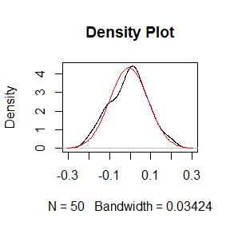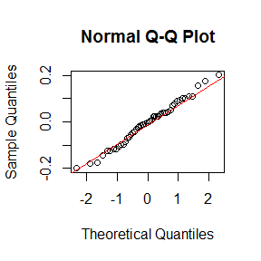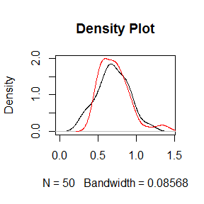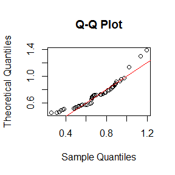
## Batch mean distribution across genes: Normal vs Empirical distribution
## Two-sided Kolmogorov-Smirnov test
## Selected Batch: 1
## Statistic D = 0.0653
## p-value = 0.974
##
##
## Batch Variance distribution across genes: Inverse Gamma vs Empirical distribution
## Two-sided Kolmogorov-Smirnov test
## Selected Batch: 1
## Statistic D = 0.2
## p-value = 0.2719Note: The non-parametric version of ComBat takes much longer time to run and we recommend it only when the shape of the non-parametric curve widely differs such as a bimodal or highly skewed distribution. Otherwise, the difference in batch adjustment is very negligible and parametric version is recommended even if p-value of KS test above is significant.## Number of Surrogate Variables found in the given data: 3